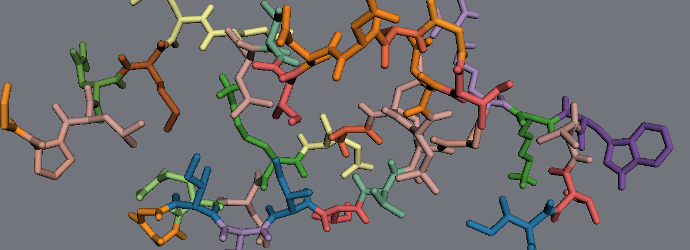
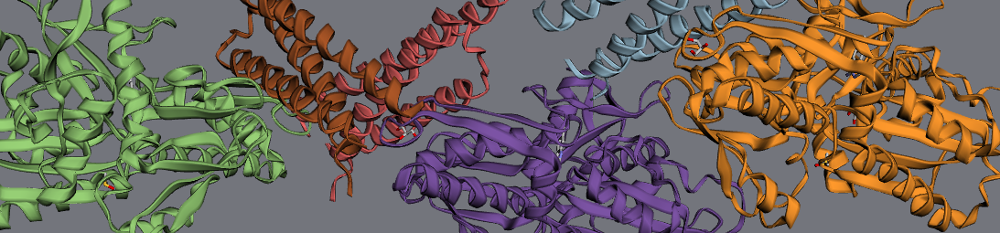
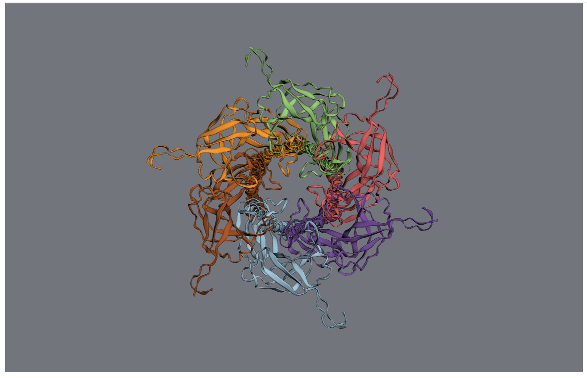

3. Biomolecular structure¶
3.1. Residues¶
Residues are generally named according to their PDB metadata. The 3-letter residue code is stored
at residue.resname while the 1-letter amino acid code (if available) is stored at residue.code:
>>> mol = mdt.from_pdb('3aid')
>>> residue = mol.residues[3]
>>> residue.name
'THR4'
>>> residue.type
'protein'
>>> residue.pdbindex
4
>>> residue.resname
'THR'
>>> residue.code
'T'
Residues contain a collection of atoms residue.atoms; these atoms can be accessed like a list
or by name:
>>> residue.atoms
<Children of Residue THR4 (index 3, chain A): [<Atom N (elem N)... >, ...]>
>>> residue.atoms[0]
<Atom N (elem N), index 30 (res THR4 chain A) in molecule Molecule: 3aid>
>>> residue.atoms['CA']
<Atom CA (elem C), index 31 (res THR4 chain A) in molecule Molecule: 3aid>
Lists of backbone and sidechain atoms are also available:
>>> residue.backbone
[<Atom C (elem C), index 32 ... >, ... ]
>>> residue.sidechain
[Atom CB (elem C), index 34 ...>, ... ]
Finally, you can navigate up and down the chain to find the residue’s neighbors:
>>> residue.next_residue
<Residue LEU5 (index 4, chain A) in Molecule: 3aid>
>>> residue.prev_residue
<Residue ILE3 (index 2, chain A) in Molecule: 3aid>
>>> residue.is_n_terminal
False
3.2. Chains¶

Chains store collections of
and Residues. A molecule’s chains can be accessed by name OR index:
>>> chain = mol.chains['A']
>>> chain.name
'A'
>>> mol.chains[1].name
'B'
>>> chain.type
'protein'
Each chain contains a collection of residues at chain.residues.
In a chain, residues can again be accessed by name or index:
>>> chain.residues['PRO1'].name
'PRO1'
>>> chain.residues[0].name
'PRO1'
The first and last residues in a protein are available (for DNA, use chain.threeprime_end and
chain.fiveprime_end):
>>> chain.n_terminal
<Residue PRO1 (index 0, chain A) in Molecule: 3aid>
>>> chain.c_terminal
<Residue PHE99 (index 98, chain A) in Molecule: 3aid>
3.3. Biomolecular assemblies¶
Many biomolecules in the PDB only contain a subset of the total biomolecular structure - the remaining parts of the structure can be generated via symmetry transformations.
When you read in such a structure, MDT will issue a warning.
>>> mol = mdt.from_pdb('3FPP')
WARNING: This PDB file contains the following biomolecular assemblies:
WARNING: Assembly "1": 3 copies of chains A, B
WARNING: Use ``mdt.build_assembly([molecule],[assembly_name])`` to build one of the above assemblies
To create the full assembly, run
>>> assembly = mdt.build_assembly(mol,"1") >>> assembly.draw()